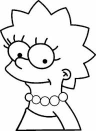
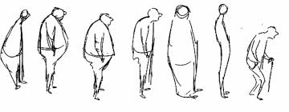
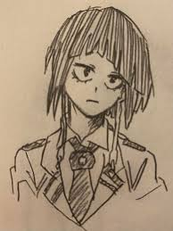
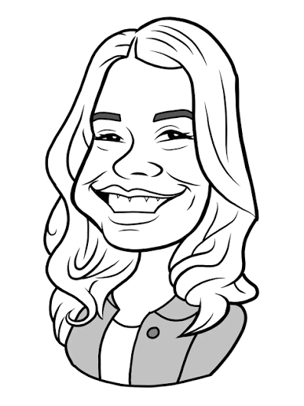

Os desenhos artísticos são classificados pelo seu objetivo, estilo ou técnica. Os principais tipos incluem o Realismo (fidelidade fotográfica), Anime/Mangá (traços japoneses), Cartoon (animação/infantil), Caricatura (exagero cômico) e Abstrato (foco em sentimentos e formas)
Usa instrumentos como réguas e escalas para detalhar projetos industriais ou plantas baixas.

Focado em traços expressivos, formas simplificadas e deliberadamente distorcidas da realidade.

Foca em representar a realidade de forma idêntica à observação ou a uma fotografia, utilizando técnicas avançadas de luz, sombra e textura.

Focado no estudo anatômico, capturando a essência, a postura e o movimento rápido de um modelo vivo.

Estilo japonês caracterizado por olhos grandes, cabelos detalhados, linhas limpas e proporções corporais dinâmicas

Desenhos espontâneos, muitas vezes sem tirar a caneta do papel, que formam padrões ou figuras orgânicas e complexas

Foca em exagerar características físicas específicas (como o nariz ou a cabeça) de uma pessoa de forma cômica, mantendo a essência de quem está sendo retratado.

você pode aprender a desenhar vendo um video onde apresenta um deles e o passo a passo deles como nesse video que deixarei logo abaixo
veremos um desenho doodle art:
e também: